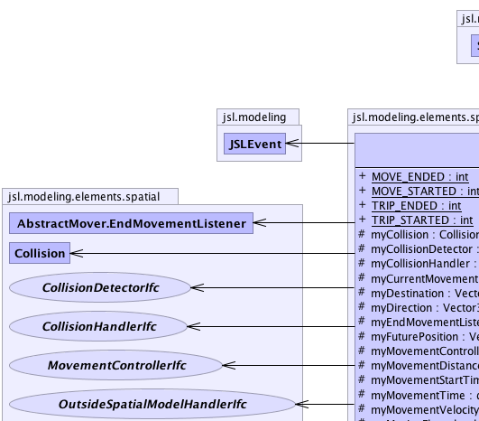
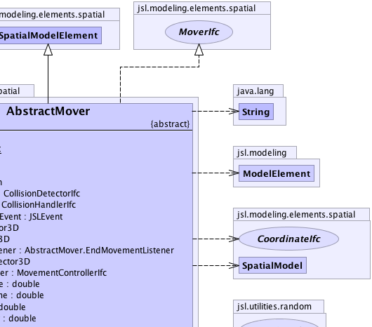
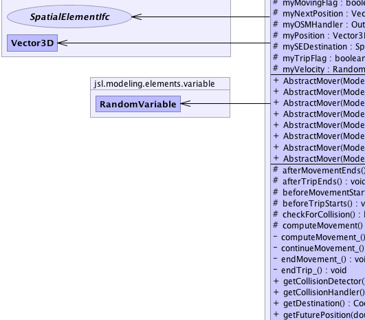
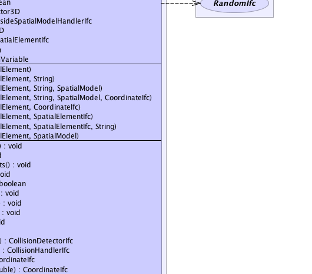
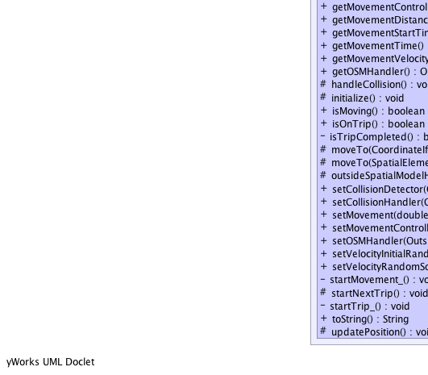
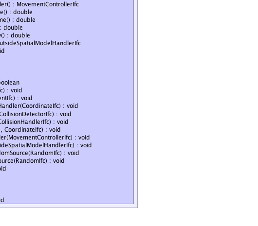

jsl.modeling.ModelElement
jsl.modeling.SchedulingElement
jsl.modeling.elements.spatial.SpatialModelElement
jsl.modeling.elements.spatial.AbstractMover
jsl.modeling.ModelElement
jsl.modeling.SchedulingElement
jsl.modeling.elements.spatial.SpatialModelElement
jsl.modeling.elements.spatial.AbstractMover
|
||||||||||
| PREV CLASS NEXT CLASS | FRAMES NO FRAMES | |||||||||
| SUMMARY: NESTED | FIELD | CONSTR | METHOD | DETAIL: FIELD | CONSTR | METHOD | |||||||||
java.lang.Object
public abstract class AbstractMover
An AbstractMover implements the MoverIfc and is a model element (SpatialModelElement). It represents an object that can move through a spatial model. It can begin a trip and make movements towards the destination associated with the trip. Each trip can be broken up into a series of movements. Each movement can have a different length and velocity as long as the object eventually completes the trip. It has default behaviors that can be modified by some helper classes. A MovementControllerIfc can be supplied to control the movement within a trip. A CollisionDetectorIfc can be supplied to detect collisions while moving. A CollisionHandlerIfc can be supplied to handle (react) to collisions detected while moving A OutsideSpatialModelHandlerIfc can be supplied to handle the situation if the the object attempts to go outside the valid frame of reference associated with its spatail model
|  |  |
|  |  |
|  |  |
| Nested Class Summary | |
|---|---|
private class |
AbstractMover.EndMovementListener
|
| Nested classes/interfaces inherited from class jsl.modeling.ModelElement |
|---|
ModelElement.TimedUpdateEventAction, ModelElement.WarmUpEventAction |
| Field Summary | |
|---|---|
static int |
MOVE_ENDED
Indicates that a AbstractMover ended a movement |
static int |
MOVE_STARTED
Indicates that a AbstractMover started a movement |
protected Collision |
myCollision
Used and reused to hold information about the next collision |
protected CollisionDetectorIfc |
myCollisionDetector
Detects the occurence of collisions |
protected CollisionHandlerIfc |
myCollisionHandler
Handles the occurs of collisions |
protected JSLEvent |
myCurrentMovementEvent
The event that represents the currently scheduled movement |
protected Vector3D |
myDestination
Holds the x,y coordinates of the destination for the current trip (movement) |
protected Vector3D |
myDirection
This Vector2D is used to hold the x and y components of the current direction of travel |
protected AbstractMover.EndMovementListener |
myEndMovementListener
ActionListener that handles the end of movement event |
protected Vector3D |
myFuturePosition
Used to indicate the position of the moving element at a projected time t |
protected MovementControllerIfc |
myMovementController
Controls the movement of this element |
protected double |
myMovementDistance
Represents the distance in the current direction of travel for the current movement |
protected double |
myMovementStartTime
The time that the current movement started |
protected double |
myMovementTime
The length of time expected for the current movement |
protected double |
myMovementVelocity
Represents the velocity (speed) in the current direction of travel for the current movement |
protected boolean |
myMovingFlag
A flag that indicates that the object is moving |
protected Vector3D |
myNextPosition
Holds the x,y coordinates of the end position associated with the current movement |
protected OutsideSpatialModelHandlerIfc |
myOSMHandler
Detects the occurence of collisions |
protected Vector3D |
myPosition
A temporary vector to hold the position. |
protected SpatialElementIfc |
mySEDestination
Holds the spatial element of the destination for the current trip (movement) if given |
protected boolean |
myTripFlag
A flag that indicates that the object is on a trip |
protected RandomVariable |
myVelocity
Represents the inherent velocity of the mover. |
static int |
TRIP_ENDED
Indicates that a AbstractMover ended a trip |
static int |
TRIP_STARTED
Indicates that a AbstractMover started a trip |
| Constructor Summary | |
|---|---|
AbstractMover(ModelElement parent)
Creates a AbstractMover with the default position within its spatial model. |
|
AbstractMover(ModelElement parent,
CoordinateIfc coordinate)
Creates a AbstractMover at the supplied coordinate within its spatial model. |
|
AbstractMover(ModelElement parent,
SpatialElementIfc element)
Creates a AbstractMover at the same coordinates as the supplied SpatialElementIfc within its spatial model. |
|
AbstractMover(ModelElement parent,
SpatialElementIfc element,
java.lang.String name)
Creates a AbstractMover at the same coordinates as the supplied SpatialElementIfc within its spatial model. |
|
AbstractMover(ModelElement parent,
SpatialModel spatialModel)
Creates a AbstractMover with the default position within the given spatial model. |
|
AbstractMover(ModelElement parent,
java.lang.String name)
Creates a AbstractMover with the default position within its spatial model. |
|
AbstractMover(ModelElement parent,
java.lang.String name,
SpatialModel spatialModel)
Creates a AbstractMover with the default position within the given spatial model. |
|
AbstractMover(ModelElement parent,
java.lang.String name,
SpatialModel spatialModel,
CoordinateIfc coordinate)
Creates a AbstractMover at the supplied coordinates within the given spatial model. |
|
| Method Summary | |
|---|---|
protected void |
afterMovementEnds()
Can be used by subclasses to invoke logic after a movement ends |
protected void |
afterTripEnds()
Can be used by subclasses to invoke logic after a trip ends |
protected void |
beforeMovementStarts()
Can be used by subclasses to invoke logic prior to the start of a movement |
protected void |
beforeTripStarts()
Can be used by subclasses to invoke logic prior to the start of a trip |
protected boolean |
checkForCollision()
This method can be overridden by subclasses to provide collision detection. |
private void |
computeMovement_()
Used internally to compute the movement either by using a supplied MovementController or by calling computeMovement() |
protected void |
computeMovement()
This method can be overridden by subclasses to compute the characteristcs of a movement. |
private void |
continueMovement_()
After a movement is completed this is used to continue movement towards the destination if the trip is not completed. |
private void |
endMovement_()
Represents the end of a scheduled movement. |
private void |
endTrip_()
Calls the afterTripEnds() method and notifies trip end observers |
CollisionDetectorIfc |
getCollisionDetector()
|
CollisionHandlerIfc |
getCollisionHandler()
|
CoordinateIfc |
getDestination()
Gets a reference to the CoordinateIfc representing the destination of the mover |
CoordinateIfc |
getFuturePosition(double time)
Returns a CoordinateIfc that represents the position of the spatial element at the given time. |
MovementControllerIfc |
getMovementController()
|
double |
getMovementDistance()
Gets the distance associated with the current movement |
double |
getMovementStartTime()
Get the time that the current movement started |
double |
getMovementTime()
Gets the time length for the current movement |
double |
getMovementVelocity()
Gets the velocity of the movement that is in progress |
OutsideSpatialModelHandlerIfc |
getOSMHandler()
Get the object the handles when the movement takes the element outside the boundaries of the current spatial model |
protected void |
handleCollision()
This method can be overridden by subclasses to provide collision handling. |
protected void |
initialize()
This method should be overridden by subclasses that need actions performed to initialize prior to a replication. |
boolean |
isMoving()
Indicates whether or not the element is currently moving |
boolean |
isOnTrip()
Indicates whether or not the element is currently on a trip |
private boolean |
isTripCompleted()
Checks to if the current position is the same as trip's destination |
protected void |
moveTo(CoordinateIfc destination)
Causes the element to travel from its current position to the coordinates specified. |
protected void |
moveTo(SpatialElementIfc destination)
Causes the element to move to the coordinates of the specified SpatialElementIfc |
protected void |
outsideSpatialModelHandler(CoordinateIfc coordinate)
This method is called if the destination is outside of the element's current spatial model. |
void |
setCollisionDetector(CollisionDetectorIfc collisionDetector)
Sets the collision detector. |
void |
setCollisionHandler(CollisionHandlerIfc collisionHandler)
Sets the collision handler, if null then no collision handling is performed |
void |
setMovement(double velocity,
CoordinateIfc position)
Sets up the movement before it gets processed. |
void |
setMovementController(MovementControllerIfc movementController)
Set the movement controller. |
void |
setOSMHandler(OutsideSpatialModelHandlerIfc OSMHandler)
Set the handler for taking care of when the element goes outside the boundaries of its spatial model. |
void |
setVelocityInitialRandomSource(RandomIfc source)
Sets the random source associated with the velocity used at the beginning of each replication |
void |
setVelocityRandomSource(RandomIfc source)
Sets the random source associated with the velocity. |
private void |
startMovement_()
Used to start a movement towards a destination computes the characteristics of the movement (distance, velocity, direction, end position, etc) check for collisions and handles if necessary, then schedules the movement. |
protected void |
startNextTrip()
Should be used by subclasses to initiate (schedule) the next trip after ending the current trip. |
private void |
startTrip_()
Calls the beforeTripStarts() method and notifies trip started observers |
java.lang.String |
toString()
Returns the name of the class and the model element's name. |
protected void |
updatePosition()
This method is called at the end of a movement to update the position. |
| Methods inherited from class jsl.modeling.elements.spatial.SpatialModelElement |
|---|
attachPositionObserver, changeSpatialModel, distanceTo, distanceTo, getInitialPosition, getInitialSpatialModel, getModelElement, getPosition, getPreviousPosition, getSpatialElement, initializeSpatialElement, isPositionEqualTo, isPositionEqualTo, removePositionObserver, setCurrentPosition, setInitialPosition, setModelElement, setSpatialElement |
| Methods inherited from class java.lang.Object |
|---|
clone, equals, finalize, getClass, hashCode, notify, notifyAll, wait, wait, wait |
| Methods inherited from interface jsl.modeling.elements.spatial.SpatialElementIfc |
|---|
attachPositionObserver, changeSpatialModel, distanceTo, distanceTo, getInitialPosition, getInitialSpatialModel, getModelElement, getObserverState, getPosition, getPreviousPosition, getSpatialModel, initializeSpatialElement, isPositionEqualTo, isPositionEqualTo, removePositionObserver, setInitialPosition |
| Methods inherited from interface jsl.utilities.IdentityIfc |
|---|
getId, getName |
| Field Detail |
|---|
public static final int TRIP_STARTED
public static final int TRIP_ENDED
public static final int MOVE_STARTED
public static final int MOVE_ENDED
protected MovementControllerIfc myMovementController
protected CollisionHandlerIfc myCollisionHandler
protected CollisionDetectorIfc myCollisionDetector
protected OutsideSpatialModelHandlerIfc myOSMHandler
protected SpatialElementIfc mySEDestination
protected Vector3D myPosition
protected Vector3D myDestination
protected Vector3D myNextPosition
protected Vector3D myDirection
protected Vector3D myFuturePosition
protected RandomVariable myVelocity
protected double myMovementVelocity
protected double myMovementDistance
protected double myMovementStartTime
protected double myMovementTime
protected JSLEvent myCurrentMovementEvent
protected AbstractMover.EndMovementListener myEndMovementListener
protected boolean myMovingFlag
protected boolean myTripFlag
protected Collision myCollision
| Constructor Detail |
|---|
public AbstractMover(ModelElement parent)
parent -
public AbstractMover(ModelElement parent,
java.lang.String name)
parent - name -
public AbstractMover(ModelElement parent,
CoordinateIfc coordinate)
parent - coordinate -
public AbstractMover(ModelElement parent,
SpatialElementIfc element)
parent - position -
public AbstractMover(ModelElement parent,
SpatialElementIfc element,
java.lang.String name)
parent - position - name -
public AbstractMover(ModelElement parent,
java.lang.String name,
SpatialModel spatialModel)
parent - name - spatialModel -
public AbstractMover(ModelElement parent,
SpatialModel spatialModel)
parent - spatialModel -
public AbstractMover(ModelElement parent,
java.lang.String name,
SpatialModel spatialModel,
CoordinateIfc coordinate)
parent - name - spatialModel - coordinate - Must be valid for the spatial model| Method Detail |
|---|
public final CoordinateIfc getFuturePosition(double time)
MoverIfc
getFuturePosition in interface MoverIfctime - Must be greater than or equal to zero
public final boolean isMoving()
MoverIfc
isMoving in interface MoverIfcpublic final boolean isOnTrip()
MoverIfc
isOnTrip in interface MoverIfcpublic final double getMovementDistance()
MoverIfc
getMovementDistance in interface MoverIfcpublic final double getMovementTime()
MoverIfc
getMovementTime in interface MoverIfcpublic final double getMovementStartTime()
MoverIfc
getMovementStartTime in interface MoverIfcpublic final double getMovementVelocity()
MoverIfc
getMovementVelocity in interface MoverIfcpublic final CollisionDetectorIfc getCollisionDetector()
getCollisionDetector in interface MoverIfcpublic final void setCollisionDetector(CollisionDetectorIfc collisionDetector)
MoverIfc
setCollisionDetector in interface MoverIfcpublic final CollisionHandlerIfc getCollisionHandler()
getCollisionHandler in interface MoverIfcpublic final void setCollisionHandler(CollisionHandlerIfc collisionHandler)
MoverIfc
setCollisionHandler in interface MoverIfccollisionHandler - The collisionHandler to set.public final MovementControllerIfc getMovementController()
getMovementController in interface MoverIfcpublic final void setMovementController(MovementControllerIfc movementController)
MoverIfc
setMovementController in interface MoverIfcmovementController - The movementController to set.public final void setVelocityInitialRandomSource(RandomIfc source)
MoverIfc
setVelocityInitialRandomSource in interface MoverIfcpublic void setVelocityRandomSource(RandomIfc source)
MoverIfc
setVelocityRandomSource in interface MoverIfcpublic final OutsideSpatialModelHandlerIfc getOSMHandler()
MoverIfc
getOSMHandler in interface MoverIfcpublic final void setOSMHandler(OutsideSpatialModelHandlerIfc OSMHandler)
MoverIfc
setOSMHandler in interface MoverIfcOSMHandler - The OSMHandler to set.
public final void setMovement(double velocity,
CoordinateIfc position)
MoverIfc
setMovement in interface MoverIfcvelocity - Must be > 0public java.lang.String toString()
ModelElement
toString in class ModelElementpublic CoordinateIfc getDestination()
MoverIfc
getDestination in interface MoverIfcprotected final void moveTo(CoordinateIfc destination)
destination - protected final void moveTo(SpatialElementIfc destination)
destination - protected void initialize()
ModelElement
initialize in class SpatialModelElementprotected void beforeTripStarts()
protected void afterTripEnds()
protected void startNextTrip()
protected void beforeMovementStarts()
protected void afterMovementEnds()
protected void outsideSpatialModelHandler(CoordinateIfc coordinate)
coordinate - protected void updatePosition()
protected void computeMovement()
protected boolean checkForCollision()
protected void handleCollision()
private final void startTrip_()
private final void endTrip_()
private final void startMovement_()
private final void computeMovement_()
private final void continueMovement_()
private final void endMovement_()
private final boolean isTripCompleted()
|
||||||||||
| PREV CLASS NEXT CLASS | FRAMES NO FRAMES | |||||||||
| SUMMARY: NESTED | FIELD | CONSTR | METHOD | DETAIL: FIELD | CONSTR | METHOD | |||||||||